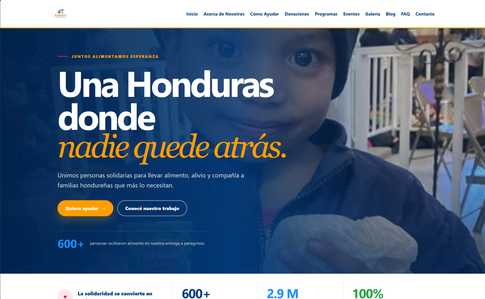
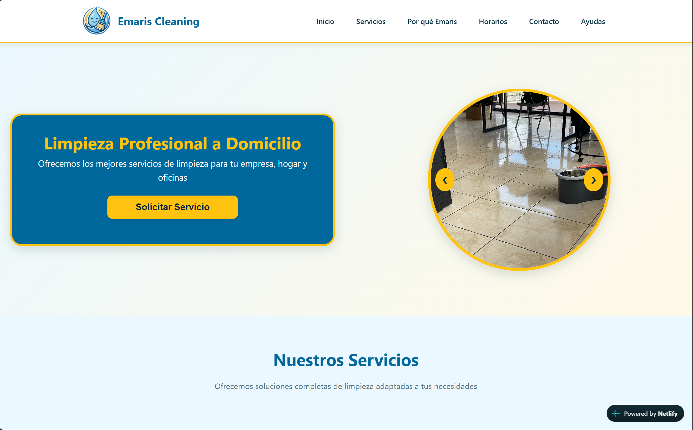
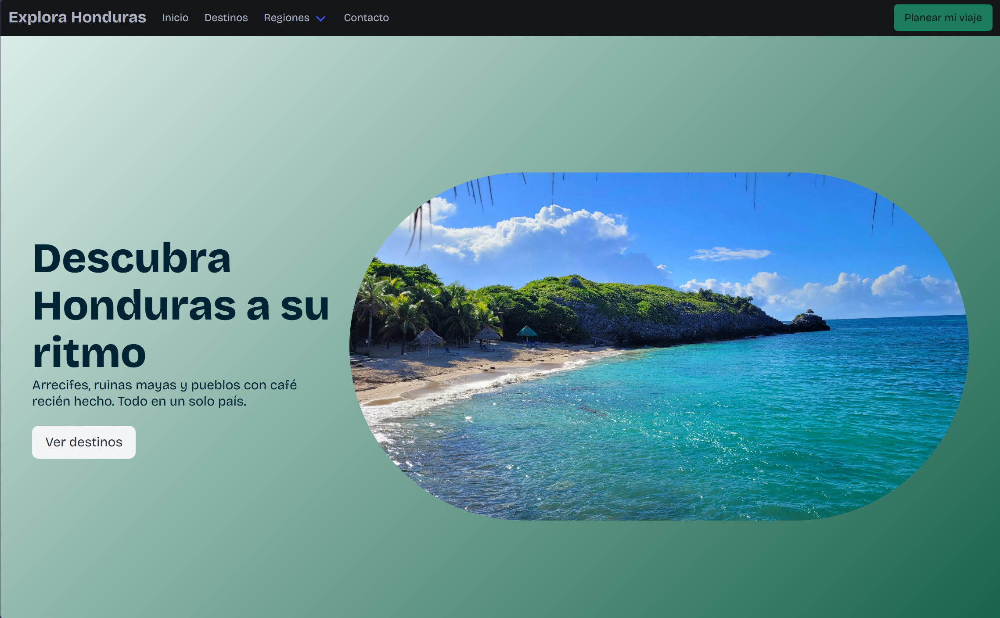

Josué Mata
Estudiante de Ingeniería en Sistemas
Estudio en la Universidad Católica de Honduras (UNICAH) y hago desarrollo web y sistemas de escritorio con bases de datos.
Estudio en la Universidad Católica de Honduras (UNICAH) y hago desarrollo web y sistemas de escritorio con bases de datos.

Este fue un proyecto personal pensando en un menu de una cafeteria teniendo pensado un diseño elegante tambien se tiene pensado hacer un sistema de escritorio para el manejo de venta y entrada del producto.
Ver proyecto
Este fue un proyecto desarrollado para la clase de desarrollo de software, fue hecho para una ferreteria con mis compañeros el proyecto cuenta tambien con un face id recognizer.
Ver proyecto
Este fue un proyecto fue desarrollado para un evento de la organizacion llamada guaymura para poder hacer una rifa para el mundial se desarrollo con mi compañero Joseph Joel Martinez.
Ver proyecto
Proyecto de la asignatura de Portales Web para una organización PANAH fue un trabajo en conjunto se aprendio mucho, como el trabajo en equipo .
Ver proyecto
Este fue un proyecto fue desarrollado para una clienta deseaba una pagina que fuera sencilla llamativa y muy interactiva, este proyecto se realizo en conjunto con Joseph Joel Martinez.
Ver proyecto
Este fue un proyecto fue desarrollado para un trabajo en la asignatura de Desarrollo de portales web ll para aprender a usar plantillas como Bulma y Bootstrap asi un desarrollo rapido.
Ver proyecto
Soy estudiante de Ingeniería en Ciencias de la computación en la Universidad Católica de Honduras (UNICAH), con experiencia en desarrollo web, ingeniería de software y bases de datos a través de proyectos de clase. Estoy armando este portafolio para empezar a trabajar.
¿Tenés un proyecto en mente? Escribime.